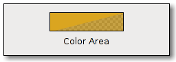

| GIMP Widgets Library Reference Manual | ||||
|---|---|---|---|---|
| Top | Description | Object Hierarchy | Implemented Interfaces | Properties | Signals | ||||
GimpColorAreaGimpColorArea — Displays a GimpRGB color, optionally with alpha-channel. |
 |
GimpColorArea; enum GimpColorAreaType; GtkWidget * gimp_color_area_new (const GimpRGB *color,GimpColorAreaType type,GdkModifierType drag_mask); void gimp_color_area_set_color (GimpColorArea *area,const GimpRGB *color); void gimp_color_area_get_color (GimpColorArea *area,GimpRGB *color); gboolean gimp_color_area_has_alpha (GimpColorArea *area); void gimp_color_area_set_type (GimpColorArea *area,GimpColorAreaType type); void gimp_color_area_set_draw_border (GimpColorArea *area,gboolean draw_border);
GObject
+----GInitiallyUnowned
+----GtkObject
+----GtkWidget
+----GtkDrawingArea
+----GimpColorArea
"color" GimpRGB* : Read / Write / Construct "drag-mask" GdkModifierType : Write / Construct Only "draw-border" gboolean : Read / Write "type" GimpColorAreaType : Read / Write / Construct
typedef enum {
GIMP_COLOR_AREA_FLAT = 0,
GIMP_COLOR_AREA_SMALL_CHECKS,
GIMP_COLOR_AREA_LARGE_CHECKS
} GimpColorAreaType;
The types of transparency display for GimpColorArea.
GtkWidget * gimp_color_area_new (const GimpRGB *color,GimpColorAreaType type,GdkModifierType drag_mask);
Creates a new GimpColorArea widget.
This returns a preview area showing the color. It handles color DND. If the color changes, the "color_changed" signal is emitted.
|
A pointer to a GimpRGB struct. |
|
The type of color area to create. |
|
The event_mask that should trigger drags. |
Returns : |
Pointer to the new GimpColorArea widget. |
void gimp_color_area_set_color (GimpColorArea *area,const GimpRGB *color);
Sets area to a different color.
|
Pointer to a GimpColorArea. |
|
Pointer to a GimpRGB struct that defines the new color. |
void gimp_color_area_get_color (GimpColorArea *area,GimpRGB *color);
Retrieves the current color of the area.
|
Pointer to a GimpColorArea. |
|
Pointer to a GimpRGB struct that is used to return the color. |
gboolean gimp_color_area_has_alpha (GimpColorArea *area);
Checks whether the area shows transparency information. This is determined
via the area's GimpColorAreaType.
|
Pointer to a GimpColorArea. |
Returns : |
TRUE if area shows transparency information, FALSE otherwise. |
void gimp_color_area_set_type (GimpColorArea *area,GimpColorAreaType type);
Allows to change the type of area. The GimpColorAreaType determines
whether the widget shows transparency information and chooses the size of
the checkerboard used to do that.
|
Pointer to a GimpColorArea. |
|
A GimpColorAreaType. |
void gimp_color_area_set_draw_border (GimpColorArea *area,gboolean draw_border);
The area can draw a thin border in the foreground color around
itself. This function allows to toggle this behaviour on and
off. The default is not draw a border.
|
Pointer to a GimpColorArea. |
|
whether to draw a border or not |
"color" property"color" GimpRGB* : Read / Write / Construct
The color displayed in the color area.
Since GIMP 2.4
"draw-border" property "draw-border" gboolean : Read / Write
Whether to draw a thin border in the foreground color around the area.
Default value: FALSE
Since GIMP 2.4
"type" property"type" GimpColorAreaType : Read / Write / Construct
The type of the color area.
Default value: GIMP_COLOR_AREA_FLAT
Since GIMP 2.4
"color-changed" signalvoid user_function (GimpColorArea *gimpcolorarea,
gpointer user_data) : Run First
|
the object which received the signal. |
|
user data set when the signal handler was connected. |